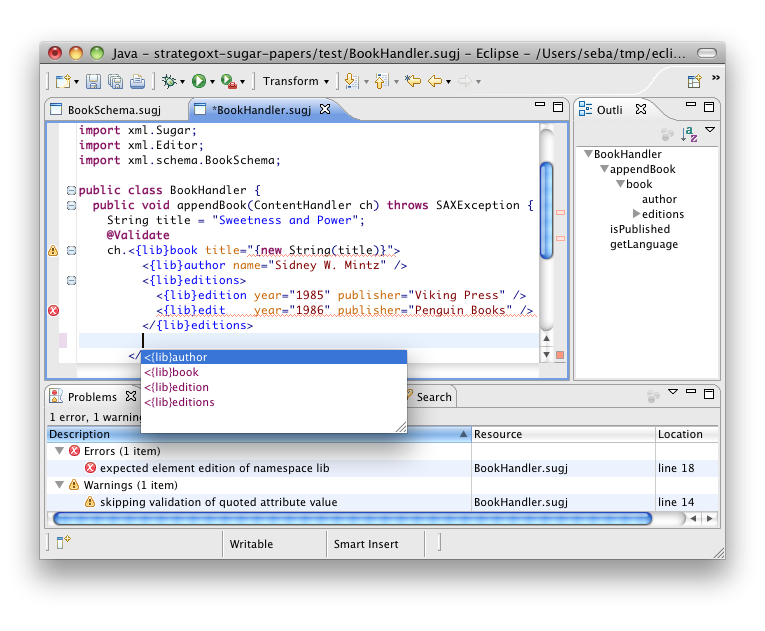

News
- What does language composition really mean? Paper at LDTA 2012 [ abstract | .pdf ]
- SugarJ now on github: http://github.com/seba--/sugarj
- Tool demonstration and poster on SugarJ at SPLASH 2011
- Paper Growing a Language Environment with Editor Libraries at GPCE 2011 [ abstract | .pdf ]
- Paper SugarJ: Library-based Syntactic Language Extensibility at OOPSLA 2011 [ abstract | .pdf ]
Description
In essence, the goal of SugarJ is to enable expressing programms in the syntax most natural to the problem domain the program is supposed to address. For instance, when generating XML documents in Java, the programmer should be able to use standard XML syntax instead of Java syntax for calling JDOM, say.
We propose to integrate syntactic extensibility into the main extension mechanism of programming languages—libraries. Libraries thus export syntactic sugar in addition to semantic artifacts traditionally exported: classes, methods, data types, etc. When importing a library, the syntax of the general purpose language is augmented by the syntactic definition exported by the library.

Notably, libraries that contain syntactic sugar retain the composability and self-applicability of conventional libraries: syntactic sugar can be composed by importing multiple libraries; syntactic sugar can be used in the development of a library that exports syntactic sugar itself. This enables the embedding of DSLs and the development of meta-DSLs, that is a DSL for defining DSLs, without ever leaving or reasoning outside of a SugarJ program.
Installation and Usage
Please also take a look at first steps with SugarJ.
For a quick start, install our Eclipse plugin available at http://update.sugarj.org/.
The source code of all components of SugarJ is available on github at http://github.com/seba--/sugarj:
case studies,
compiler,
IDE.
Subprojects
We are currently developing a number of extensions of SugarJ. The relevant code can be found as follows:- SugarHaskell: in branch haskell with case studies located in /test-workspace/haskell, file extension is ".shs"
- Layout-sensitive parsing: in repository layout-parsing
- Model-oriented programming: in branch model-driven
- Incremental introduction of DSLs for software maintenance: Java Pet Store case study
- Language extensibility for any language: in frieger's sugarj fork
Team
- Sebastian Erdweg, project leader, University of Marburg
- Tillmann Rendel, University of Marburg
- Christian Kästner, University of Marburg
- Klaus Ostermann, University of Marburg
- Lennart Kats, Delft University of Technology
- Eelco Visser, Delft University of Technology
- Paolo G. Giarrusso, University of Marburg
- Jonas Pusch, University of Marburg
- Stefan Fehrenbach, University of Marburg
- Felix Rieger, University of Marburg
Publications
Sebastian Erdweg, Paolo G. Giarrusso, and Tillmann Rendel. Language Composition Untangled. In Proceedings of Workshop on Language Descriptions, Tools and Applications (LDTA), 2012. to appear. [ abstract | bibtex | .pdf ]
Sebastian Erdweg and Lennart C. L. Kats and Tillmann Rendel and Christian Kästner and Klaus Ostermann and Eelco Visser. Growing a Language Environment with Editor Libraries. In Proceedings of Conference on Generative Programming and Component Engineering (GPCE), pages 167–176. ACM, 2011. [ abstract | bibtex | .pdf ]
Sebastian Erdweg, Tillmann Rendel, Christian Kästner and Klaus Ostermann. SugarJ: Library-based Syntactic Language Extensibility. In Proceedings of Conference on Object-Oriented Programming, Systems, Languages, and Applications (OOPSLA), pages 391–406. ACM, 2011. Distinguished Paper Award. [ abstract | bibtex | .pdf ]